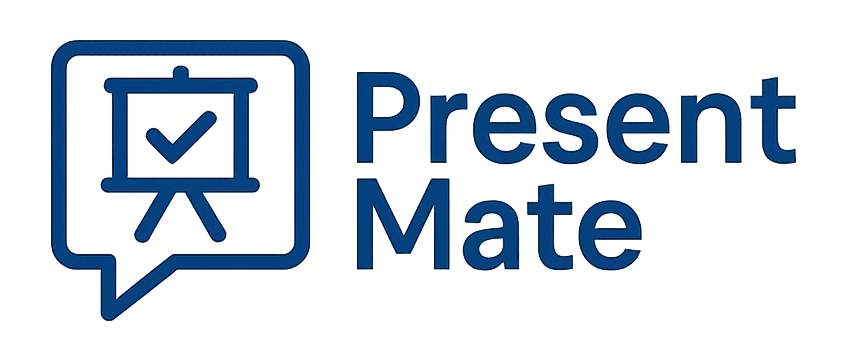

AI 기반 발표 피드백 도우미. 속도·침묵·추임새·시선·구조·떨림까지 실시간으로 코칭합니다.
오디오/영상 파일을 업로드하면 속도·볼륨·침묵·추임새·구조·떨림을 자동 분석하고 AI 코칭을 드립니다.
마이크와 카메라로 발표를 연습하면 음성을 실시간 텍스트로 변환하고 추임새·침묵·시선을 즉각 피드백합니다.
Python·Streamlit·ffmpeg 없이 브라우저만으로 작동합니다. 마이크·카메라 권한만 허용하면 바로 사용할 수 있습니다.
AI 피드백 및 전사 기능은 Gemini API 키가 필요하지만, 없어도 음향·구조·속도 분석은 모두 가능합니다.
API 키 저장: config/api_config.js 파일에 키를 입력하면 매번 입력할 필요가 없습니다.
WAV · MP3 · M4A · MP4 · MOV · WebM 등 오디오/영상 파일
Gemini AI를 이용한 자동 전사, 브라우저 음성 인식, 또는 직접 입력이 가능합니다.